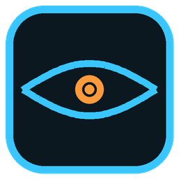
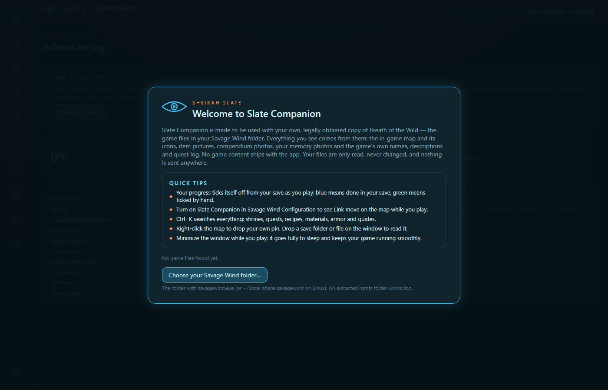
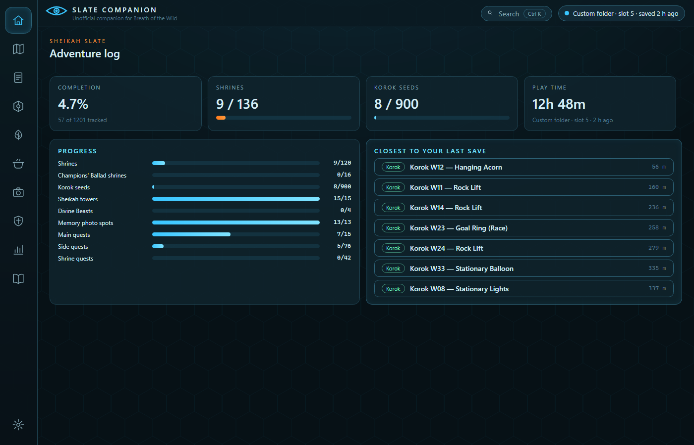
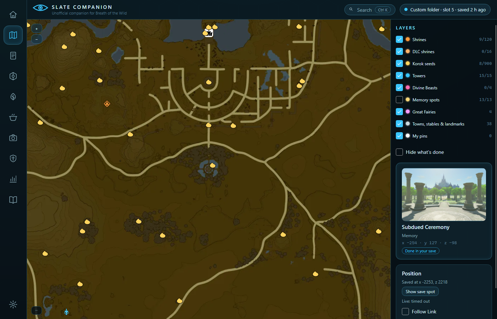
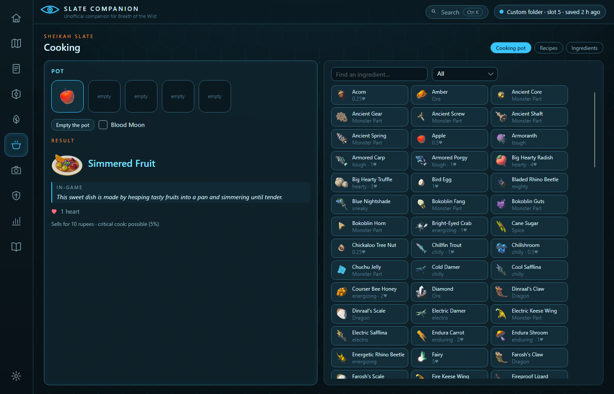
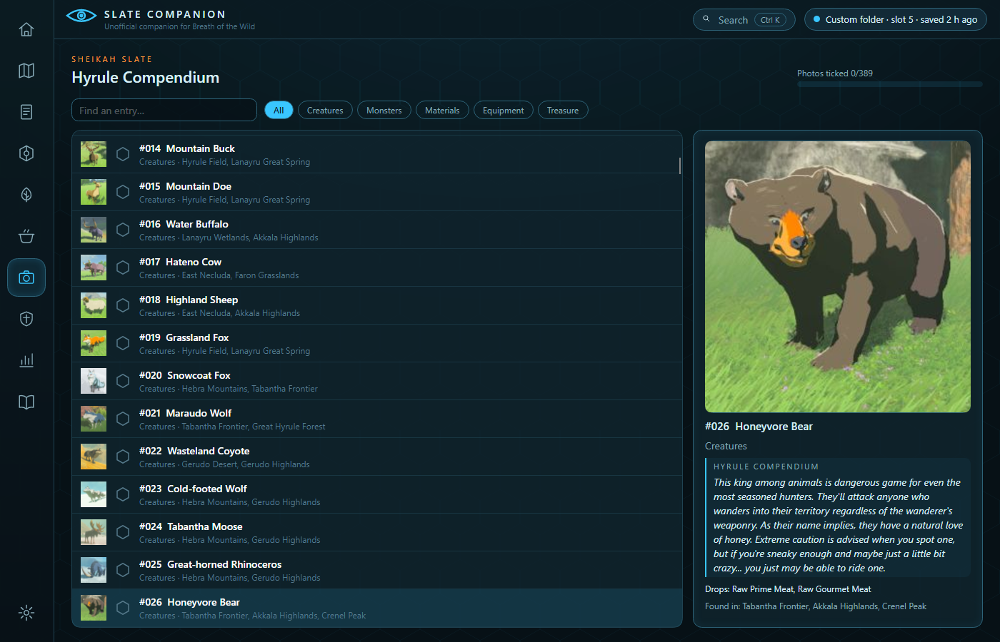
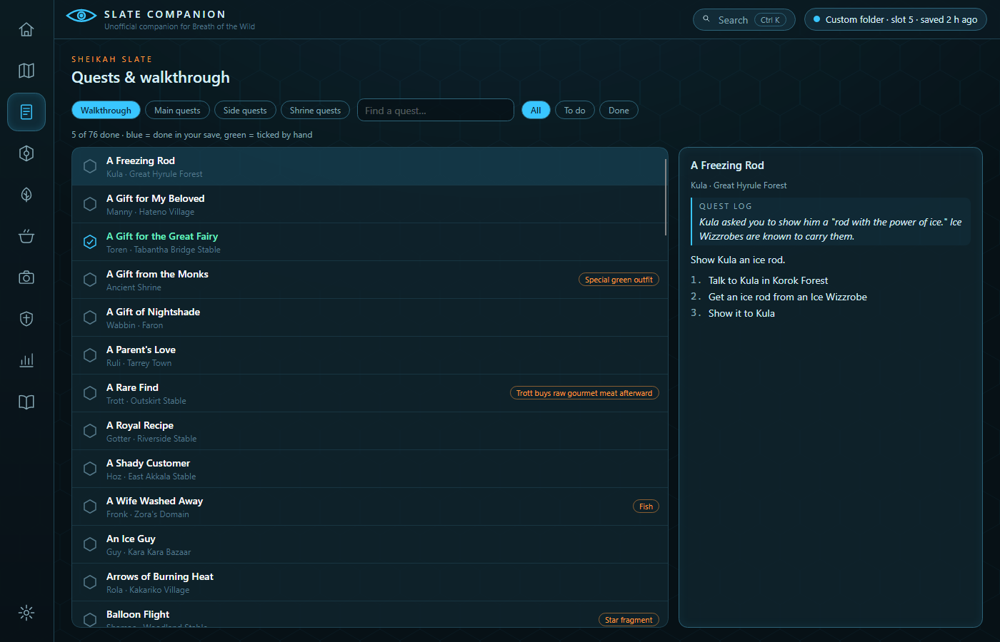
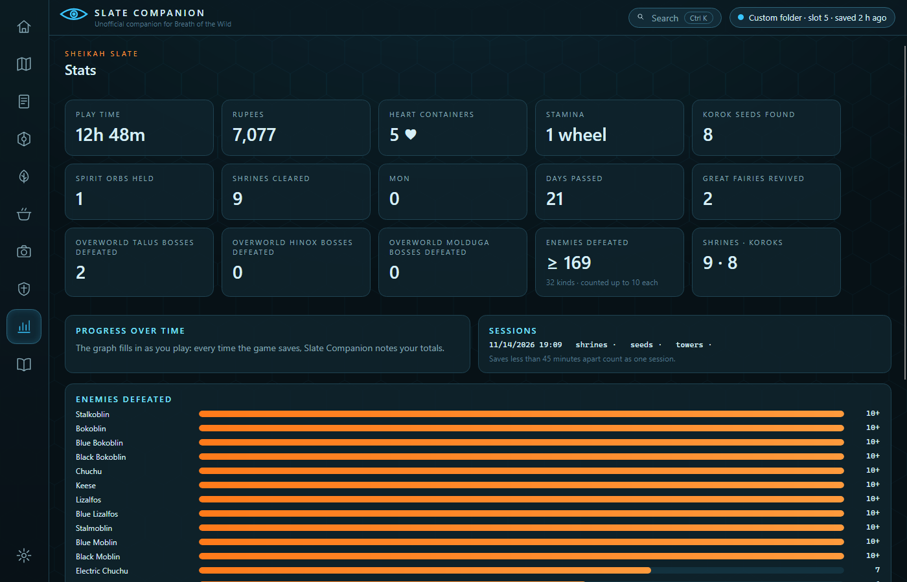

A Sheikah Slate for your PC
Slate Companion reads your Breath of the Wild save while you play and ticks off shrines, Korok seeds, towers, memories and quests by itself. It shows the in-game map with the game's own icons, built from your own game files, and keeps a walkthrough, every quest, a cooking simulator, the Hyrule Compendium, armor upgrades and your stats in one place.

WHAT IT DOES
Your progress, from your save
All 136 shrines, 900 Korok seeds, towers, Divine Beasts, memories and 133 quests tick themselves off as you play. Savage Wind, Cemu, Ryujinx and Yuzu-family saves are found by themselves. Saves are only ever read.
The in-game map
Sharp at full zoom, with the game's own icons, your save spot, your pins, the photo at each memory spot, and Link's live position from Savage Wind.
Quests & shrines
The story chapter by chapter with both DLC packs, every quest with the game's own quest log, and a short solution for every shrine.
Cooking
A pot simulator using the game's own rules, checked against 617 real results, with item icons and the game's descriptions.
Compendium, armor, stats
All 389 compendium entries with their photos, armor with a Great Fairy shopping list, and stats like play time, enemies and play sessions.
Stays out of your game's way
A native app drawn in software, at low priority, that does nothing until something changes and sleeps when minimized. Nothing is sent anywhere.
SCREENSHOTS






Map, icons, pictures and in-game text in these screenshots were built from a legally obtained copy of the game, as they are on your PC. They're © Nintendo and aren't part of Slate Companion.
GETTING STARTED
- Download the installer for Windows or the AppImage for Linux.
- Start it. It looks for Savage Wind on your PC; press Use these, or Choose your Savage Wind folder….
- Wait under a minute while it builds the map, icons, pictures and text from your game files, once.
- Play. It finds your saves by itself and ticks things off as the game saves.